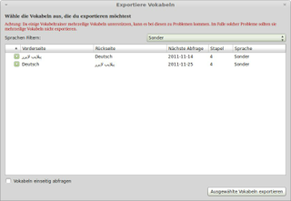
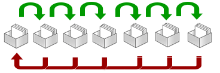
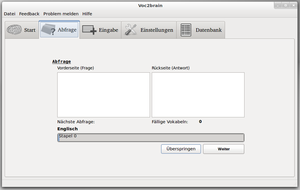

Voc2brain
Dieser Artikel wurde für die folgenden Ubuntu-Versionen getestet:
Ubuntu 16.04 Xenial Xerus
Ubuntu 14.04 Trusty Tahr
Zum Verständnis dieses Artikels sind folgende Seiten hilfreich:
 Das Programm Voc2brain
Das Programm Voc2brain  ist ein simpler und benutzerfreundlicher Vokabeltrainer für die Betriebssysteme Windows und Linux, der das Lernen nach dem Leitner-Karteikastensystem ermöglicht. Der Vokabeltrainer fragt nicht nur Vokabeln ab, sondern plant auch den Zeitpunkt der Abfrage. So bietet die Erinnerungsfunktion am Systemstart die Möglichkeit, dass der Benutzer an das Lernen der Vokabeln erinnert wird, sobald Vokabeln abgefragt werden sollten.
ist ein simpler und benutzerfreundlicher Vokabeltrainer für die Betriebssysteme Windows und Linux, der das Lernen nach dem Leitner-Karteikastensystem ermöglicht. Der Vokabeltrainer fragt nicht nur Vokabeln ab, sondern plant auch den Zeitpunkt der Abfrage. So bietet die Erinnerungsfunktion am Systemstart die Möglichkeit, dass der Benutzer an das Lernen der Vokabeln erinnert wird, sobald Vokabeln abgefragt werden sollten.
Voc2brain ist so simpel wie möglich gehalten aber bietet trotzdem Erweiterungseinstellungen, welche zum Beispiel das Lernen von bis zu vier unterschiedlichen Sprachen oder Fachgebieten erlaubt. Beim Importieren, sowie beim Exportieren von Vokabeln, hat der Nutzer die Möglichkeit spezifische Vokabeln auszuwählen. So müssen zum Beispiel beim Importieren von Vokabellisten nicht gleich alle Vokabeln importiert werden.
Auf die Unterstützung von Bild- und Tondateien wird bewusst verzichtet, um die Benutzerfreundlichkeit zu wahren und damit sich der Benutzer ausschließlich auf das Lernen der Vokabeln konzentrieren kann. Programmiert wurde Voc2brain in Python und besitzt eine vollständige PyQt4-Oberfläche, wodurch der Vokabeltrainer auf verschiedensten Betriebssystemen laufen kann.
Installation¶
Das Programm ist nicht in den offiziellen Paketquellen enthalten. Ein für Trusty Tahr angepasstes Debianpaket kann von tomtomtom.org  heruntergeladen werden, ein Debianpaket für Xenial Xerus und neuer gibt es ebennfsll von tomtomtom.org .
heruntergeladen werden, ein Debianpaket für Xenial Xerus und neuer gibt es ebennfsll von tomtomtom.org .
Achtung!
Fremdpakete können das System gefährden.
Import und Export¶
Voc2brain unterstützt eine Reihe von unterschiedlichen Dateiformaten zum Importieren und Exportieren von Vokabeln:
|  |
| Vokabeln exportieren |
| Dateiformate | ||
| Basis | Import | Export |
| Voc2brain | v2b | v2b |
| Parley | kvtml | kvtml |
| Mnemosyne | xml | xml |
| Teachmaster | vok2 | vok2 |
| Granule | dkf | - |
| Ignuit | - | xml |
| jMemorize | - | jml |
|  |
| Leitner-Karteikastensystem |
Das Lernsystem¶
Voc2brain setzt auf das Leitner-Karteikastensystem. Dieses sieht unterschiedlichen Pausen zwischen den Abfragen vor. Nach jeder Abfrage kommen die Vokabeln einen Stapel weiter, bis sie den siebten Stapel erreicht haben. Der Zeitabstand zwischen der Wiederholung des Begriffs erhöht sich nach jedem Aufsteigen in einen höheren Stapel. Wird eine Vokabel bei der Abfrage allerdings falsch beantwortet, kommt die Vokabel zurück in den ersten Stapel. Durch dieses System wird ein temporäres Lernen von Vokabeln verhindert und Sprachen können nachhaltiger und effizienter gelernt werden.
Einstellungen¶
Unter "Einstellungen" kann man sich Voc2brain je nach Belieben anpassen. Dabei kann man nicht nur die Zeitabstände zwischen den verschiedenen Stapeln ändern und das Erstellen von Sicherheitskopien einrichten, sondern auch angeben, ob und wie viel zufällig ausgewählte Vokabeln aus dem letzten Stapel bei der Abfrage abgefragt werden.
Unter den Einstellungen über die Erinnerungsfunktion kann man die Art, wie der Benutzer an die Abfrage der Vokabeln erinnert wird, ändern. Hier steht zum einen die empfohlene Erinnerung über ein eigenes Fenster zur Verfügung, wie auch das Erinnern über eine Benachrichtigung (Notification).
Unter "Erweiterungen" hat man die Möglichkeit seinen Vokabeltrainer und dessen Oberfläche durch neue Möglichkeiten zu erweitern. Zur Verfügung steht unter anderen die Unterstützung von bis zu vier unterschiedlichen Sprachen oder Fachgebieten. Alle Erweiterungen sind bereits in dem Vokabeltrainer enthalten und müssen nicht zusätzlich installiert werden.
Vokabeln editieren¶
|  |
| Die Abfrage |
Unter "Datenbank" kann man sich die Liste aller Vokabeln anzeigen lassen und bei Bedarf editieren. Zum Editieren muss die jeweilige Zeile der Vokabel einfach mit einem  Doppelklick ausgewählt werden. Dadurch öffnet sich ein neues Fenster, in dem man die Vokabel bearbeiten kann. Benutzt man die Option "Vokabeln beidseitig abfragen" bei der Eingabe der Vokabel, muss man darauf achten, dass man die Einstellungen auch in beiden erstellten Einträgen ändert.
Doppelklick ausgewählt werden. Dadurch öffnet sich ein neues Fenster, in dem man die Vokabel bearbeiten kann. Benutzt man die Option "Vokabeln beidseitig abfragen" bei der Eingabe der Vokabel, muss man darauf achten, dass man die Einstellungen auch in beiden erstellten Einträgen ändert.
Datensicherung¶
Voc2brain bietet die Möglichkeit, manuelle Sicherungen wie auch automatische Sicherungen zu erstellen. Diese werden im .v2b-Format gespeichert. Diese Sicherungen können später über die Import-Funktion eingespielt werden. Sinnvoll ist dies, wenn man verlorene Vokabeln wiederherstellen möchte oder seine Vokabel-Datenbank auf andere Computer übertragen möchte. Unter den Einstellungen kann man den Ort und die Häufigkeit der Sicherungen einstellen.
Erweiterungen¶
Voc2brain ist möglichst einfach und übersichtlich gehalten, doch es gibt die Möglichkeit, die Oberfläche und den Funktionsumfang durch die enthaltenen zu erweitern. Die in Voc2brain enthaltenen Funktionen sind unter den "Einstellungen" zu finden. Je nach belieben lässt sich der Vokabeltrainer somit mit folgenden Funktionen erweitern:
| Vokabeln exportieren |
| Erweiterungen | |
| Erweiterung | Funktion |
| "Prüfungs Modus" | Durch die "Prüfungs Modus"-Erweiterung lassen sich Vokabeln innerhalb kurzer Zeit lernen. Dafür werden nicht nur die Vokabeln abgefragt, welche für den jeweiligen Tag vorgesehen sind. Man kann auswählen, aus welchen Stapeln die Vokabeln abgefragt werden. Im "Prüfungs Modus" gehen die Vokabeln nur dann einen Stapel weiter, wenn sie sich im ersten bis dritten Stapel befinden. Da diese Funktion das Karteikartensystem umgeht, ist es nicht empfohlen, diese Funktion zu benutzen und dennoch kann sie notwendig sein, wenn man sich kurz vor einer Prüfungssituation befindet.S |
| "Mehrere Fremdsprachen" | Durch die Erweiterung "Mehrere Fremdsprachen" gibt es die Möglichkeit, Vokabeln in bis zu vier verschiedene Sprachen oder Fachgebieten zu lernen. Diese Erweiterung kann aktiviert werden, falls in mehr als einer Sprache oder Fachgebiet gelernt werden soll. |
| "Stapel überspringen" | Durch die Erweiterung "Stapel überspringen" lassen sich Stapel sperren. Sobald ein Stapel gesperrt ist, werden in diesen keine Vokabeln mehr abgelegt. Dieser Stapel wird somit übersprungen, wodurch die Vokabeln schneller den letzten Stapel erreichen. |
| "Design" | Durch die "Design"-Erweiterung lässt sich das Oberflächendesign wechseln. |
| "Schriftgröße" | Durch die "Schriftgröße"-Erweiterung kann die Schriftgröße der Vokabeln eingestellt werden. Gerade bei besonderen Schriftsystemen, wie sie zum Beispiel im Arabischen oder Chinesischen benutzt werden, kann das zur besseren Lesbarkeit notwendig sein. |
Tastatur bei der Abfrage¶
Die Abfrage kann man durch die ausschließliche Benutzung der Tastatur beschleunigen. Hierbei wird mit der Tab ⇆ -Taste der Fokus weitergeschaltet und mit ⏎ oder der -Taste bestätigt. Die Steuerung durch die Tastatur beschleunigt den Abfrageprozess ungemein.
Zukünftiges¶
Voc2brain wird mehr auf Plattformunabhängigkeit setzen und vor allem die Cloud-Funktionen ausbauen. So soll auch das mobile Lernen, welches den Lernerfolg mit Voc2brain beschleunigt, mehr Wertschätzung erfahren. Eine Voc2brain Version für Mac ist nicht ausgeschlossen, jedoch ist eine Erweiterung des Voc2brain-Teams dafür Voraussetzung. Durch weitere Übersetzungen wird Voc2brain für mehr Nutzer zugänglich.
Teilnahme¶
Voc2brain ist ein von Freiwilligen getragenes, gemeinnütziges Projekt, welches auf die Hilfe Anderer angewiesen ist. Die Entwickler rufen deshalb zu Beihilfe in verschiedenen Bereichen auf. Unter anderem werden Freiwillige in den Bereichen Übersetzung, Design und App-Entwicklung willkommen. Darüber hinaus werden Tester für Linux, Windows und auch Mac OS X gesucht. Feedbacks, Wünsche und Problemberichte helfen dabei, Voc2brain besser und stabiler zu machen. Das Programm ist unter GPLv3 veröffentlicht.

 Übersichtsartikel
Übersichtsartikel- Erstellt mit Inyoka
-
 2004 – 2017 ubuntuusers.de • Einige Rechte vorbehalten
2004 – 2017 ubuntuusers.de • Einige Rechte vorbehalten
Lizenz • Kontakt • Datenschutz • Impressum • Serverstatus -
Serverhousing gespendet von